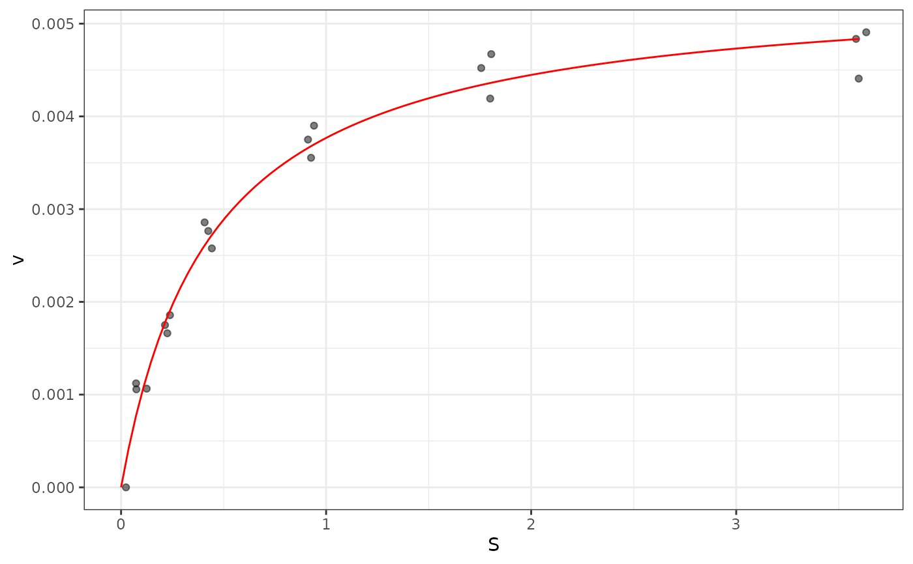

Draws the observed reaction velocities against substrate concentration and
overlays a pre-computed fitted Michaelis-Menten curve (mml).
Usage
michaelisMentenPlot(
data,
model,
x = "S",
y = "v",
theme = theme_bw(),
jitter = TRUE,
jitter_width = NULL,
jitter_color = NULL,
jitter_alpha = 0.5,
jitter_size = 1.5,
line_color = NULL,
linetype = "solid"
)Arguments
- data
A data frame of observations containing the
xandycolumns.- model
A data frame of fitted-line coordinates (e.g.
mml) containing the samexandycolumns asdata. Drawn as the fitted curve.- x
Name of the column in
datato plot on the x-axis (substrate concentration). Defaults to"S".- y
Name of the column in
datato plot on the y-axis (velocity). Defaults to"v".- theme
A ggplot2 theme to apply. Defaults to
ggplot2::theme_bw().- jitter
Logical; when
TRUE(the default) the observed points are plotted (jittered horizontally byjitter_width). WhenFALSE, the points are omitted and only the fitted line is drawn.- jitter_width
Horizontal jitter width for the observed points. Only used when
jitter = TRUE. WhenNULL, ggplot2's default jitter width is used.- jitter_color
Point colour, supplied as a hex string from the VizModules
colourpicker::colourInput()workflow. WhenNULL, ggplot2's default point colour is used.- jitter_alpha
Opacity of the observed points, in
[0, 1]. Defaults to0.5.- jitter_size
Size of the observed points, passed to
ggplot2::geom_point(). Defaults to1.5.- line_color
Fitted-curve colour, supplied as a hex string from the VizModules
colourpicker::colourInput()workflow. WhenNULL,"red"is used.- linetype
Line type for the fitted curve, passed to
ggplot2::geom_line()(e.g."solid","dashed","dotted","dotdash","longdash","twodash"). Defaults to"solid".
Value
A ggplot2::ggplot() object.
Examples
data(mm_kinetics)
if (requireNamespace("drc", quietly = TRUE)) {
library(drc)
mm_model <- drm(v ~ S, data = mm_kinetics, fct = MM.2())
mml <- data.frame(S = seq(min(mm_kinetics$S), max(mm_kinetics$S), length.out = 100))
mml$v <- predict(mm_model, newdata = mml)
michaelisMentenPlot(mm_kinetics, mml, x = "S", y = "v")
}
